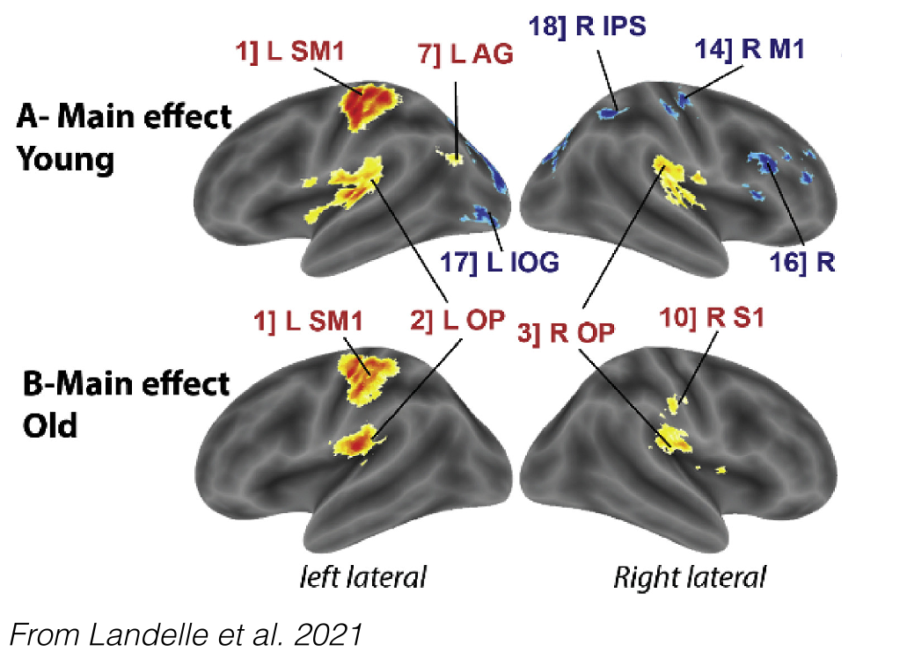
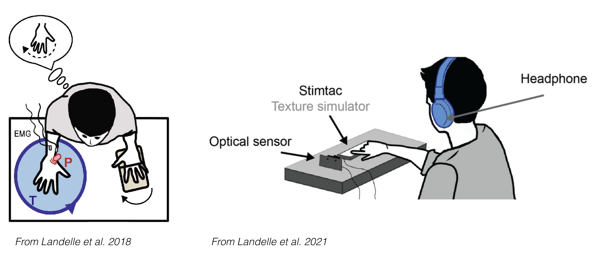

...
page in progress
Body and Environmental Perception Changes with Aging
Body and Environmental Perception Changes with Aging
We investigated the neural bases of sensorimotor integration in young and older adults. Using proprioceptive 💪🏼 and tactile 🖐🏽 hand-rotation illusions during fMRI, we found a common sensorimotor network across ages but reduced hemispheric lateralization in older adults during proprioceptive stimulation. This imbalance correlated with poorer proprioceptive, but not tactile, perception, suggesting altered interhemispheric coordination with age.
Body and Environmental Perception Changes with Aging
This project examined how aging alters sensory integration in perceiving body movement and texture. Using tactile ✋🏻, visual 👁️, auditory 👂🏾, and proprioceptive 💪🏽 stimulations, we found that tactile perception remains stable while muscle proprioception declines. Despite this, older adults show preserved or enhanced multisensory integration, suggesting a compensatory reweighting of sensory inputs.